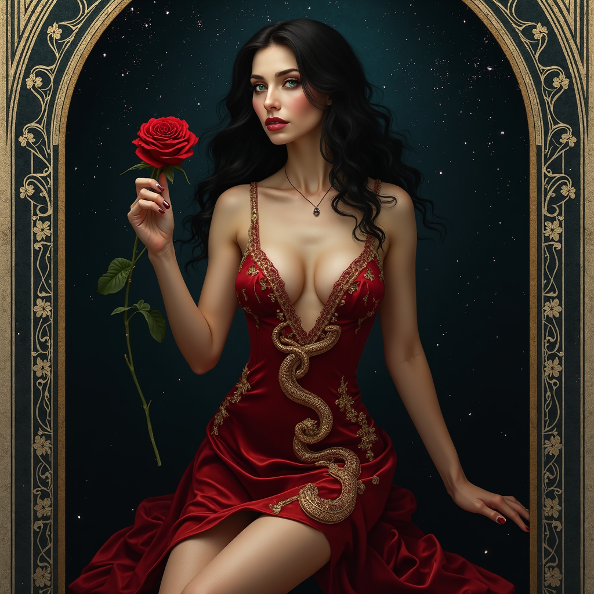

They say Surrana was once the most desired courtesan in all the realms, her beauty so sharp it cut kings and
beggars
alike. Yet desire is a fickle thing, and when she spurned the advances of a high priest, he cursed her with a
hunger
that no touch could sate. For years, she wandered through flesh and passion like a starving wolf, until the
night she
found herself at a shrine to some long dead power. Silently, she offered it the last thing she owned — her
mortal soul —
if only to end her pain. Whoever or whatever it was accepted the gift. In return Surrana
no longer worshiped love — she was love, and lust, and the ruin they bring.